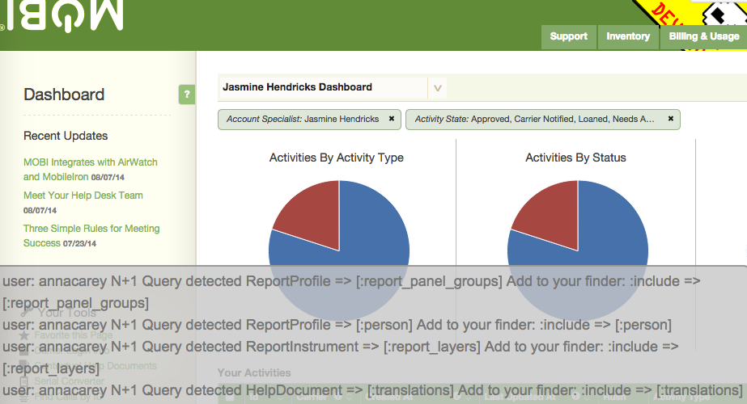
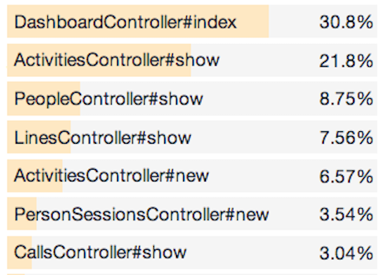
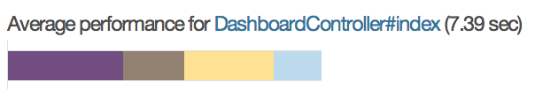
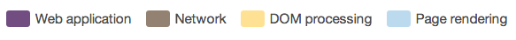

Need For Speed
Shaving Milliseconds Like a Boss
Created By: Ri Caragol / @ritec and Anna Carey / @annamul
Topics for Today
- Why is faster better?
- Indexes, why and when.
- Explain and Analyze
- Benchmarking
- N+1 Problem and Bullet Gem
- Asset Pipeline and Nginx config
Why is faster better?
- Amazon loses 1% of sales for every 100ms it takes their site to load.
- Shopzilla reduced their loading time from 7 seconds to 2. This performance boost resulted in a 25% increase in pageviews and a 9.5% increase in revenue.
- Mozilla shaved 2.2 seconds off their landing pages and increased download conversions by 15.4%, generating millions of additional Firefox downloads every year.
- Slow Load times = Poor User Experience = Poor Search Ranking

How speed affects your conversion rate
Speed affects conversions in a big way. For most e-commerce stores, the association between speed and conversions looks something like the graph above. In this example, you can see that visitors who experience an average 1 second load time convert twice as often as visitors who experience an 4 second average load time.
reference: http://torbit.com/benefits/
Adding Indexes
Indexes dramatically improve performance in SQL queries and generally should be added when:
- Whenever you have foreign keys.
- You have a column that is sorted, or ordered often have an index on that column.
- If you have a has_many :through relationship, your join table should have a unique index on both properties involved in the join as a compound key.
- Whenever there are lookup fields and columns that are used in a GROUP BY
- When we fetch records directly using unique identifiers like email or username - add a unique index.
Things to keep in mind.
- Without an Index we have to scan the whole table, this is inefficient and expensive.
- If you see a WHERE, HAVING or ORDER BY in generated queries... make sure there's an index
- Once an index is created, no further intervention is required: the system will update the index when the table is modified.
- Your DB will use the index in queries when it thinks doing so would be more efficient than a sequential table scan.
- Creating an index on a large table can take a long time. Reads are allowed, but writes won't be.
- Indexes can be built concurrently to allow writes but there are caveats.
- Indexes add data manipulation overhead to data manipulation operations.
Let's see if we comply...
conn = ActiveRecord::Base.connection
conn.tables.collect do |t|
columns = conn.columns(t).collect(&:name).select do |x|
x.ends_with?("_id" || x.ends_with("_type"))
end
indexed_columns = conn.indexes(t).collect(&:columns).flatten.uniq
unindexed = columns - indexed_columns
unless unindexed.empty?
puts "#{t}: #{unindexed.join(", ")}"
end
end
For a more robust soltion see the lol_dba gem
Benchmarking
Ruby comes with a module called Benchmark which provides methods to measure and report the time it takes to execute ruby code. Benchmarks example:
require 'benchmark'
puts Benchmark.measure {
puts "Chris, thanks for organizing MOBI Conf"*900_000
}
0.020000 0.240000 0.260000 ( 1.502408)
user system total real
Benchmarking methods
- benchmark(caption = "", label_width = nil, format = nil, *labels)
- bm(label_width = 0, *labels)
- bmbm(width = 0)
- measure(label = "")
- realtime()
Benchmarking example
require 'benchmark'
include Benchmark # we need the CAPTION and FORMAT constants
n = 50000
Benchmark.benchmark(CAPTION, 7, FORMAT, ">total:", ">avg:") do |x|
tf = x.report("for:") { for i in 1..n; a = "1"; end }
tt = x.report("times:") { n.times do ; a = "1"; end }
tu = x.report("upto:") { 1.upto(n) do ; a = "1"; end }
[tf+tt+tu, (tf+tt+tu)/3]
end
#returns
user system total real
for: 0.010000 0.010000 0.020000 ( 0.024594)
times: 0.000000 0.000000 0.000000 ( 0.010406)
upto: 0.010000 0.010000 0.020000 ( 0.012889)
>total: 0.020000 0.020000 0.040000 ( 0.047889)
>avg: 0.006667 0.006667 0.013333 ( 0.015963)
Benchmarking Queries
puts Benchmark.measure {
Business.where(:name => "ADS").includes(:lines)
.where("lines.active = 't'").references(:lines)
}
0.000000 0.000000 0.000000 ( 0.000893)
puts Benchmark.measure {
Business.where(:name => "ADS").includes(:lines)
.where(:lines => { :active => true })
}
0.000000 0.000000 0.000000 ( 0.007002)
Explain Yourself...
EXPLAIN is a Postgres command used to see how long a statement is taking to execute and what exactly it is doing. Explain will output the number of rows the query will touch, the cost and the width in bytes. The Cost is actually an arbitrary number can can be thought of as units of work. Explain does not actually run the query.
mobi_dev=# explain select * from lines;
QUERY PLAN
----------------------------------------------------------------
Seq Scan on lines (cost=0.00..10016.26 rows=253726 width=318)
But I can't explain properly, without analyzing first...
mobi_dev=# explain select * from lines where active = true;
QUERY PLAN
----------------------------------------------------------------
Seq Scan on lines (cost=0.00..10016.26 rows=171925 width=318)
Filter: active
(2 rows)
mobi_dev=# analyze lines;
ANALYZE
mobi_dev=# explain select * from lines where active = true;
QUERY PLAN
----------------------------------------------------------------
Seq Scan on lines (cost=0.00..10015.92 rows=172874 width=318)
Filter: active
(2 rows)
Analyze and Explain
Give the query planner up-to-date statistics so that it can plan the best way to execute a query.
mobi_dev=# explain analyze
select *
from lines
where active = true
ORDER BY liability;
QUERY PLAN
------------------------------------------------------------------------------
Sort (cost=75875.41..76307.59 rows=172874 width=318)
(actual time=977.444..1088.552 rows=172017 loops=1)
Sort Key: liability
Sort Method: external sort Disk: 37080kB
-> Seq Scan on lines
(cost=0.00..10015.92 rows=172874 width=318)
(actual time=0.012..64.158 rows=172017 loops=1)
Filter: active
Rows Removed by Filter: 81675
Total runtime: 1128.558 ms
(7 rows)
mobi_dev=# explain analyze
select *
from lines
where active = true
ORDER BY created_by_id;
QUERY PLAN
------------------------------------------------------------------------------
Index Scan using index_lines_on_created_by_id on lines
(cost=0.42..35829.77 rows=172874 width=318)
(actual time=2.541..142.403 rows=172017 loops=1)
Filter: active
Rows Removed by Filter: 81675
Total runtime: 151.742 ms
(4 rows)
NOT IN VS EXCEPT
mobi_dev=# explain analyze
select count(*)
from people
where active = 't'
and business_id = 23 and (employee_id is null or employee_id NOT IN
(select external_employee_id from employees where business_id = 23));
QUERY PLAN
------------------------------------------------------------------------------
Aggregate (cost=4977232278.72..4977232278.73 rows=1 width=0)
(actual time=2537954.427..2537954.428 rows=1 loops=1)
-> Index Scan using index_people_on_business_id on people
(cost=3662.91..4977232151.30 rows=50966 width=0)
(actual time=268984.300..2537950.020 rows=1989 loops=1)
Index Cond: (business_id = 23)
Filter: (active AND ((employee_id IS NULL) OR (NOT (SubPlan 1))))
Rows Removed by Filter: 130041
SubPlan 1
-> Materialize
(cost=3662.48..76640.29 rows=194846 width=7)
(actual time=0.010..12.101 rows=90526 loops=100238)
-> Bitmap Heap Scan on employees
(cost=3662.48..74904.06 rows=194846 width=7)
(actual time=267.761..1910.034 rows=179716 loops=1)
Recheck Cond: (business_id = 23)
Rows Removed by Index Recheck: 61151
-> Bitmap Index Scan on index_employees_on_business_id
(cost=0.00..3613.77 rows=194846 width=0)
(actual time=265.645..265.645 rows=232292 loops=1)
Index Cond: (business_id = 23)
Total runtime: 2537957.639 ms
(13 rows)
mobi_dev=# EXPLAIN ANALYZE SELECT COUNT (*) FROM ( SELECT employee_id FROM people
mobi_dev(# WHERE people.business_id = 23 AND (people.active = 't' OR employee_id is null)
mobi_dev(# EXCEPT SELECT external_employee_id FROM employees WHERE business_id =23)s;
QUERY PLAN
------------------------------------------------------------------------------
Aggregate (cost=155776.52..155776.53 rows=1 width=0) (actual time=7638.495..7638.495 rows=1 loops=1)
-> Subquery Scan on s
(cost=153154.39..155548.87 rows=91059 width=0)
(actual time=6459.607..7638.202 rows=1989 loops=1)
-> SetOp Except
(cost=153154.39..154638.28 rows=91059 width=7)
(actual time=6459.604..7637.755 rows=1989 loops=1)
-> Sort
(cost=153154.39..153896.34 rows=296779 width=7)
(actual time=6459.594..7576.301 rows=279954 loops=1)
Sort Key: "*SELECT* 1".employee_id
Sort Method: external merge Disk: 6024kB
-> Append
(cost=2546.11..122118.62 rows=296779 width=7)
(actual time=24.388..755.030 rows=279954 loops=1)
-> Subquery Scan on "*SELECT* 1"
(cost=2546.11..45266.10 rows=101933 width=8)
(actual time=24.387..387.592 rows=100238 loops=1)
-> Bitmap Heap Scan on people
(cost=2546.11..44246.77 rows=101933 width=8)
(actual time=24.386..370.551 rows=100238 loops=1)
Recheck Cond: (business_id = 23)
Rows Removed by Index Recheck: 300410
Filter: (active OR (employee_id IS NULL))
Rows Removed by Filter: 31792
-> Bitmap Index Scan on index_people_on_business_id
(cost=0.00..2520.62 rows=135493 width=0)
(actual time=21.929..21.929 rows=132030 loops=1)
Index Cond: (business_id = 23)
-> Subquery Scan on "*SELECT* 2"
(cost=3662.48..76852.52 rows=194846 width=7)
(actual time=32.031..335.693 rows=179716 loops=1)
-> Bitmap Heap Scan on employees
(cost=3662.48..74904.06 rows=194846 width=7)
(actual time=32.029..306.479 rows=179716 loops=1)
Recheck Cond: (business_id = 23)
Rows Removed by Index Recheck: 61151
-> Bitmap Index Scan on index_employees_on_business_id
(cost=0.00..3613.77 rows=194846 width=0)
(actual time=30.255..30.255 rows=232292 loops=1)
Index Cond: (business_id = 23)
Total runtime: 7663.194 ms
(22 rows)
N+1 Queries
N+1 is the result of one query per item when you could have queried for all of the items.
clients = Client.limit(10)
clients.each do |client|
puts client.address.postcode
end
BAD: 11 Queries
Eager Loading
Eager loading is a way to improve performance by loading associated content through the DB. ActiveRecord’s eager loading capability in Rails makes it possible to significantly reduce the number of queries by letting you specify in advance all the associations that are going to be loaded.
clients = Client.includes(:address).limit(10)
clients.each do |client|
puts client.address.postcode
end
Good: 2 Queries
The Bullet Gem

N+1 Query detected
Activity => [:replacement_person]
Add to your finder: :include => [:replacement_person]
N+1 Query method call stack
mobi/app/models/activity.rb:1891:in `description'
mobi/app/models/activity.rb:1910:in `title'
mobi/app/presenters/presenter.rb:62:in `email_person_about_activity'
...
Other Ways to Improve performance...
- Use count instead of length
- Be careful with auto generated routes [only or except are your friends]
- Tune your Postgresql.conf to work well with your hardware (use pgtune)
- Use Memcache when possible
- Tune your Garbage Collector
- Only load necessary gems in production
- Check and analyze your logs for innefficiencies
Towards the front end
Browser performance
Percent of total page load time Median page load time was 2.5-4s
Dashboard Controller # index
 - Web Application 2.72s
- Network 1.45s
- Dom Processing 2.1s
- Page Rendering 1.13s
92 requests !
2.9 MB
MORE ASSET PIPELINE!
Far-future Expires Header
Because we have a unique url for each revision of the asset we the browser doesn't need to check if it has changed for a year
location ~ ^/assets/ {
expires 1y;
add_header Cache-Control public;
add_header ETag "";
break;
}
GZip Compression
Assets are gzipped during precompilation, using the maximum compression ratio, reducing the size of the data transfer to the minimum
location ~ ^/(assets)/ {
root /path/to/public;
gzip_static on; # to serve pre-gzipped version
expires max;
add_header Cache-Control public;
}
Spriting with Compass
Compass makes it easier to sprite. Just drop all of the images into a directory.References and Resources
- torbit.com/benefits/
- tomafro.net/2009/09/quickly-list-missing-foreign-key-indexes
- www.ruby-doc.org/stdlib-1.9.3/libdoc/benchmark/rdoc/Benchmark.html
- stackoverflow.com/questions/556405/what-do-real-user-and-sys-mean-in-the-output-of-time1
- stackoverflow.com/questions/3658859/when-to-add-what-indexes-in-a-table-in-rails
- https://wiki.postgresql.org/wiki/Introduction_to_VACUUM,_ANALYZE,_EXPLAIN,_and_COUNT
- www.toptal.com/ruby-on-rails/top-10-mistakes-that-rails-programmers-make